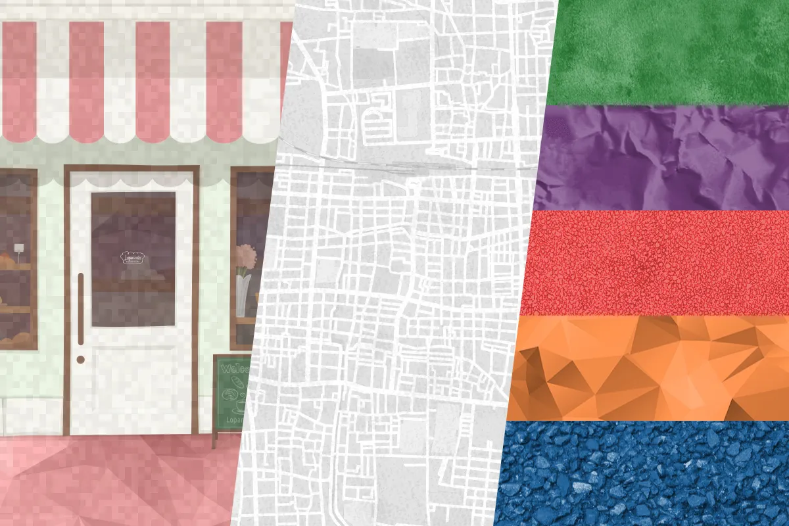

News
ボタン
a要素やbutton要素に付与すれば押せそうな感じなるスタイル。
ボタンの基本スタイル、a要素にクラスc-buttonを付与し、a要素の中身は文字列のみ。
矢印アイコンはsvg要素で入れクラスarrを付与する。
a要素の中身はインライン・グリッドで組まれるため、他の要素が入ると縦にグリッドが積まれてしまう。
ボタン（矢印はSVGで入れる）ただし、横幅を最大320pxに固定しているため、長い文字列を入れる場合は意図的に<br>タグを入れるなどすると良い。
非活性
input要素もしくはbutton要素のボタンで、disabled属性が付与されている時はグレーアウトする。
サイズバリエーション
サイズ違いがよっつ用意してある。
クラス-lを併記すると大きめボタン、クラス-sを併記すると小さめボタン、クラス-xlを併記すると親要素の横幅いっぱいに広がる大きいボタン、クラス-xsを併記すると文字量に伴い横幅が広がる小さいボタンになる。
コンポーネントから削除してもいいしカスタムしても良い。
もっと見る
「小さめボタン」よりもう少し小さな、主に「もっと見る」に使われることを見越したクラスc-moreも用意。
タグ
さらに小さなボタンぽいスタイル「タグ」は、span要素はたまたa要素にクラスc-tagを付与する。
ボタンと違い、周囲の余白が少なく、角丸も小さくスタイリングされる。
コンポーネント「アーカイブ一覧」の中で使用するとフォントサイズが小さめになる。
-
- 2022.12.22
- Mediaスキャンダル
- 「週刊文春にスクープされました」とか、割と長めのテキストが入っても良い想定のタイトル。
